11 그래프를 통한 의사소통
11.1 들어가기
탐색적 데이터 분석 에서 우리는 플롯을 <이탤릭>탐색 도구로 사용하는 방법을 배웠다. 탐색용 플롯을 만들 때는 어떤 변수가 플롯에 표시될지 (플롯을 보기도 전에) 알고 있다. 우리는 목적에 따라 플롯을 하나씩 만들었고, 빨리 파악하고, 다음 플롯으로 넘어갔다. 대부분의 분석 과정에서 수십 또는 수백 개의 플롯을 그려보고, 즉시 대부분을 폐기할 것이다.
데이터를 이해했다면 이제 이해한 바를 다른 사람들과 <이탤릭>의사소통해야 한다. 의사소통 대상자들은 배경 지식이 없고 해당 데이터를 깊이 살펴보지 않는 경우가 많다. 다른 사람들이 데이터를 신속하게 이해할 수 있게 하려면, 플롯이 최대한 스스로 설명 가능할 수 있게 노력을 많이 기울여야 한다. 이 장에서는 <볼드>ggplot2가 제공하는 도구에 대해 학습한다.
이번 장에서는 좋은 그래픽을 만드는 데 필요한 도구를 중점적으로 살펴본다. 나는 여러분이 자신이 하고자 하는 바가 무엇인지 알고 있지만, 어떻게 하는 지를 모른다고 가정한다. 이런 경우 시각화 개론 책을 이 장과 함께 읽는 것이 좋다. 나는 특히 앨버트 카이로(Albert Cairo)의 The Truthful Art 를 좋아한다. 이 책은 시각화를 만드는 메커니즘을 가르쳐 주지 않지만 효과적인 그래프를 만들기 위해 무엇을 생각해야하는지를 중점적으로 다룬다.
11.1.1 준비하기
이 장에서는 다시 한번 <볼드>ggplot2를 집중하여 볼 것이다. 또한 <볼드>dplyr을 사용하여 데이터를 처리하고 <볼드>ggrepel과 <볼드>viridis를 포함한 몇 가지 <볼드>ggplot2 확장 패키지를 사용할 것이다. 이 확장 패키지들을 여기에서 로드하지 않고, <코드체>:: 표기법을 사용하여 함수를 명시적으로 참조할 것이다. 이렇게 하면 어떤 함수가 <볼드>ggplot2에 내장되어 있는지, 또 어떤 함수가 다른 패키지에서 온 것인지를 명확히 알 수 있다. 설치되지 않은 패키지는 <코드체>install.packages()로 설치해야 한다는 것을 기억하라.
11.2 Label
The easiest place to start when turning an exploratory graphic into an expository graphic is with good labels. You add labels with the labs() function. This example adds a plot title:
ggplot(mpg, aes(displ, hwy)) +
geom_point(aes(color = class)) +
geom_smooth(se = FALSE) +
labs(title = "한글")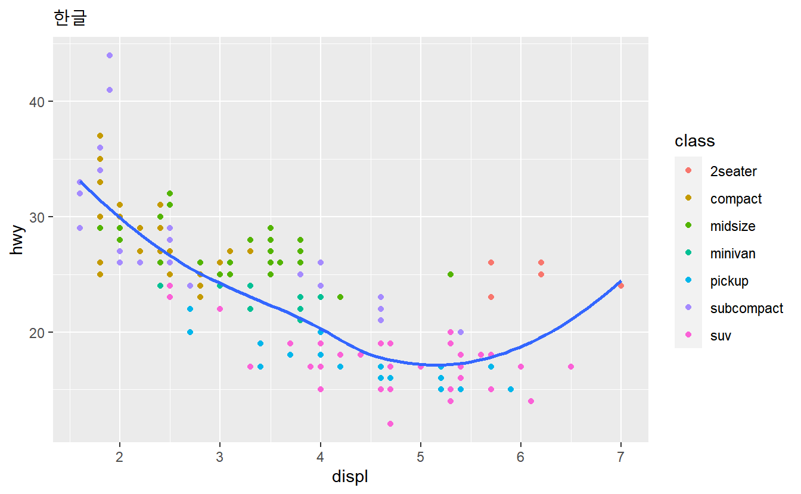
The purpose of a plot title is to summarise the main finding. Avoid titles that just describe what the plot is, e.g. “A scatterplot of engine displacement vs. fuel economy”.
If you need to add more text, there are two other useful labels that you can use in ggplot2 2.2.0 and above (which should be available by the time you’re reading this book):
subtitleadds additional detail in a smaller font beneath the title.captionadds text at the bottom right of the plot, often used to describe the source of the data.
ggplot(mpg, aes(displ, hwy)) +
geom_point(aes(color = class)) +
geom_smooth(se = FALSE) +
labs(
title = "연비는 ",
subtitle = "Two seaters (sports cars) are an exception because of their light weight",
caption = "Data from fueleconomy.gov"
)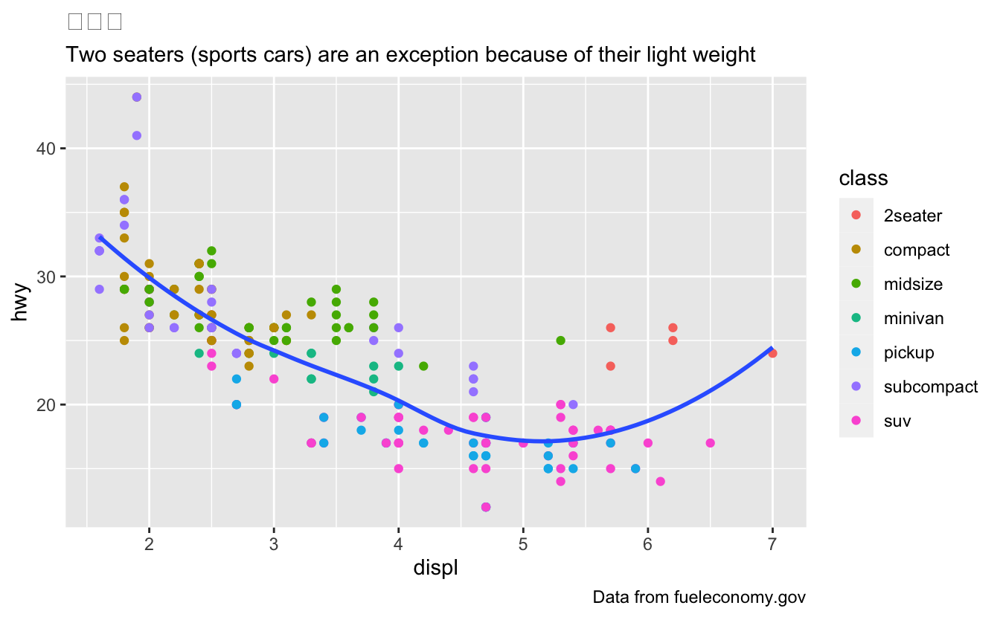
You can also use labs() to replace the axis and legend titles. It’s usually a good idea to replace short variable names with more detailed descriptions, and to include the units.
ggplot(mpg, aes(displ, hwy)) +
geom_point(aes(colour = class)) +
geom_smooth(se = FALSE) +
labs(
x = "Engine displacement (L)",
y = "Highway fuel economy (mpg)",
colour = "Car type"
)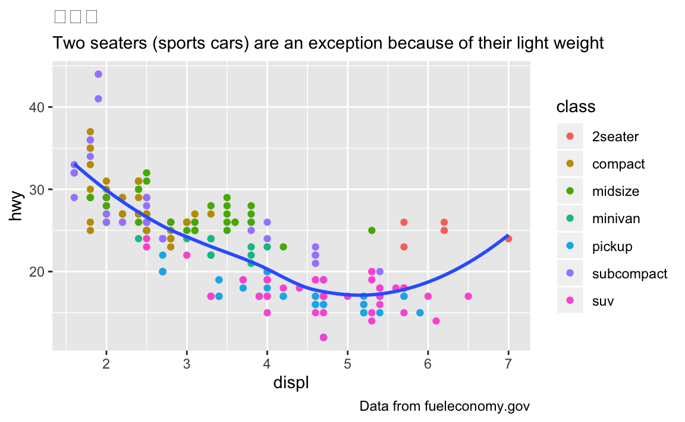
It’s possible to use mathematical equations instead of text strings. Just switch "" out for quote() and read about the available options in ?plotmath:
df <- tibble(
x = runif(10),
y = runif(10)
)
ggplot(df, aes(x, y)) +
geom_point() +
labs(
x = quote(sum(x[i] ^ 2, i == 1, n)),
y = quote(alpha + beta + frac(delta, theta))
)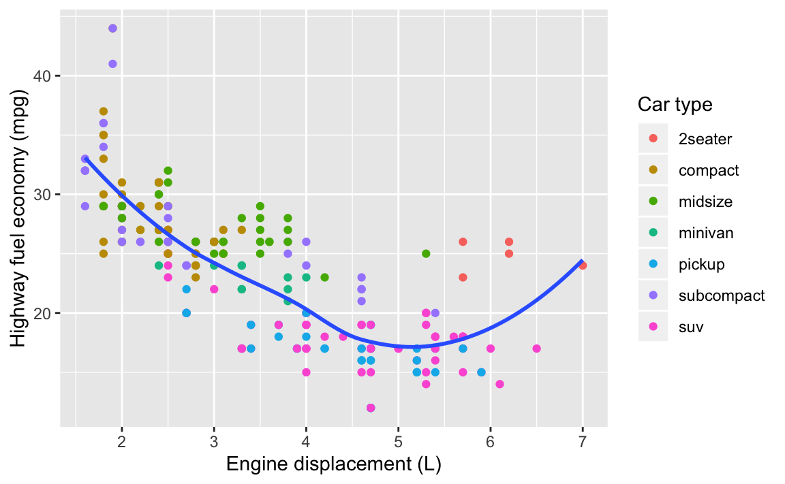
11.2.1 Exercises
Create one plot on the fuel economy data with customised
title,subtitle,caption,x,y, andcolourlabels.The
geom_smooth()is somewhat misleading because thehwyfor large engines is skewed upwards due to the inclusion of lightweight sports cars with big engines. Use your modelling tools to fit and display a better model.Take an exploratory graphic that you’ve created in the last month, and add informative titles to make it easier for others to understand.
11.3 Annotations
In addition to labelling major components of your plot, it’s often useful to label individual observations or groups of observations. The first tool you have at your disposal is geom_text(). geom_text() is similar to geom_point(), but it has an additional aesthetic: label. This makes it possible to add textual labels to your plots.
There are two possible sources of labels. First, you might have a tibble that provides labels. The plot below isn’t terribly useful, but it illustrates a useful approach: pull out the most efficient car in each class with dplyr, and then label it on the plot:
best_in_class <- mpg %>%
group_by(class) %>%
filter(row_number(desc(hwy)) == 1)
ggplot(mpg, aes(displ, hwy)) +
geom_point(aes(colour = class)) +
geom_text(aes(label = model), data = best_in_class)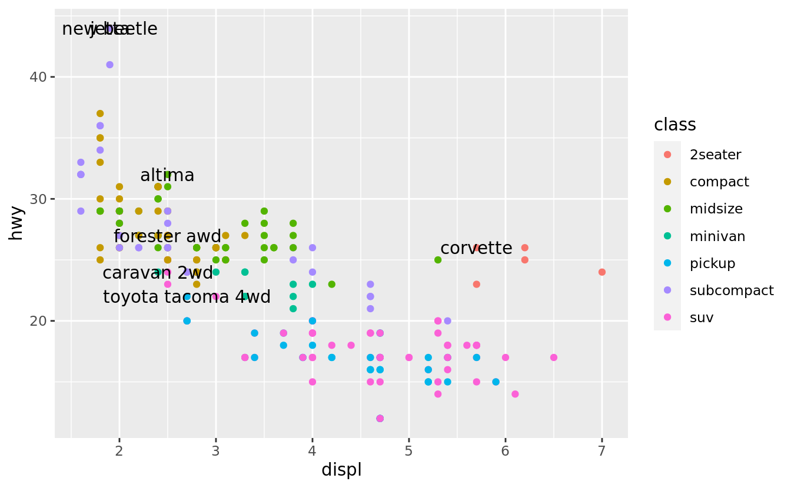
This is hard to read because the labels overlap with each other, and with the points. We can make things a little better by switching to geom_label() which draws a rectangle behind the text. We also use the nudge_y parameter to move the labels slightly above the corresponding points:
ggplot(mpg, aes(displ, hwy)) +
geom_point(aes(colour = class)) +
geom_label(aes(label = model), data = best_in_class, nudge_y = 2, alpha = 0.5)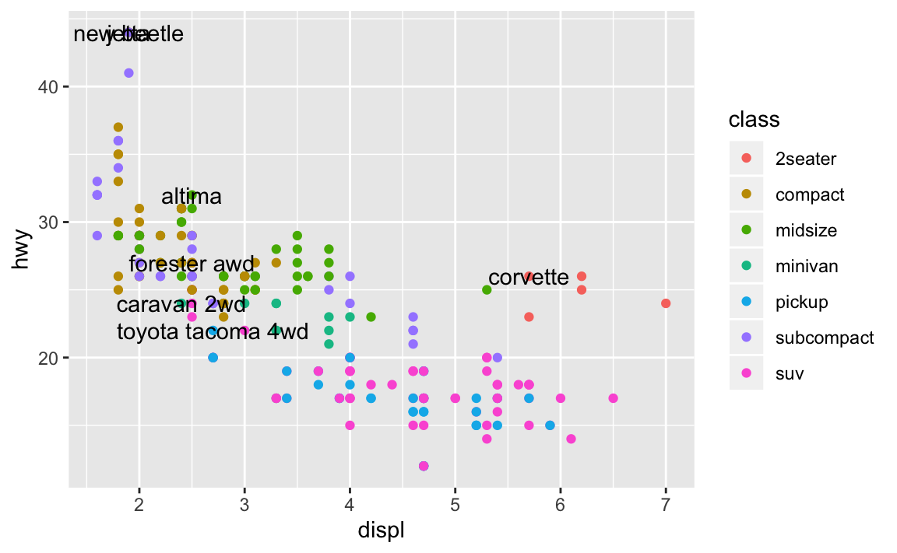
That helps a bit, but if you look closely in the top-left hand corner, you’ll notice that there are two labels practically on top of each other. This happens because the highway mileage and displacement for the best cars in the compact and subcompact categories are exactly the same. There’s no way that we can fix these by applying the same transformation for every label. Instead, we can use the ggrepel package by Kamil Slowikowski. This useful package will automatically adjust labels so that they don’t overlap:
ggplot(mpg, aes(displ, hwy)) +
geom_point(aes(colour = class)) +
geom_point(size = 3, shape = 1, data = best_in_class) +
ggrepel::geom_label_repel(aes(label = model), data = best_in_class)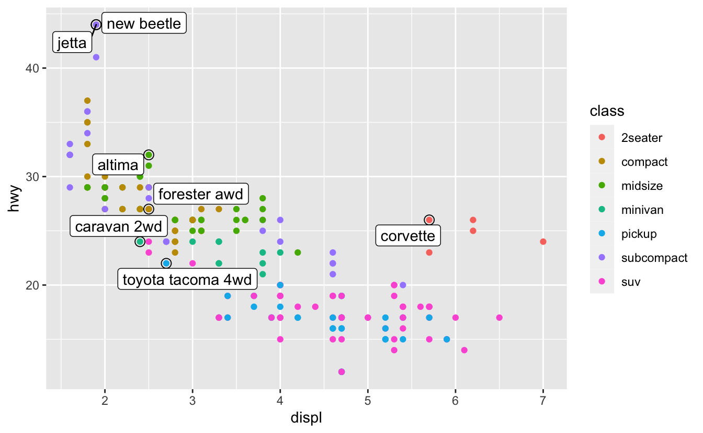
Note another handy technique used here: I added a second layer of large, hollow points to highlight the points that I’ve labelled.
You can sometimes use the same idea to replace the legend with labels placed directly on the plot. It’s not wonderful for this plot, but it isn’t too bad. (theme(legend.position = "none") turns the legend off — we’ll talk about it more shortly.)
class_avg <- mpg %>%
group_by(class) %>%
summarise(
displ = median(displ),
hwy = median(hwy)
)
#> `summarise()` ungrouping output (override with `.groups` argument)
ggplot(mpg, aes(displ, hwy, colour = class)) +
ggrepel::geom_label_repel(aes(label = class),
data = class_avg,
size = 6,
label.size = 0,
segment.color = NA
) +
geom_point() +
theme(legend.position = "none")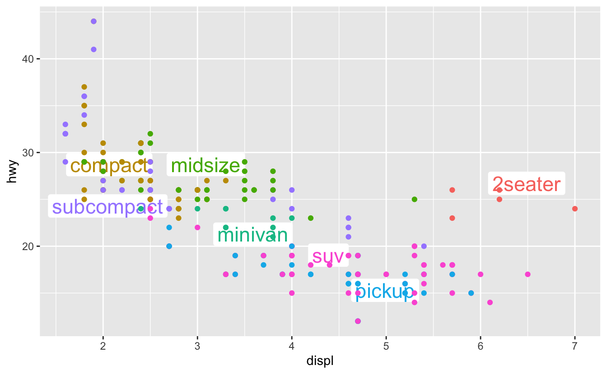
Alternatively, you might just want to add a single label to the plot, but you’ll still need to create a data frame. Often, you want the label in the corner of the plot, so it’s convenient to create a new data frame using summarise() to compute the maximum values of x and y.
label <- mpg %>%
summarise(
displ = max(displ),
hwy = max(hwy),
label = "Increasing engine size is \nrelated to decreasing fuel economy."
)
ggplot(mpg, aes(displ, hwy)) +
geom_point() +
geom_text(aes(label = label), data = label, vjust = "top", hjust = "right")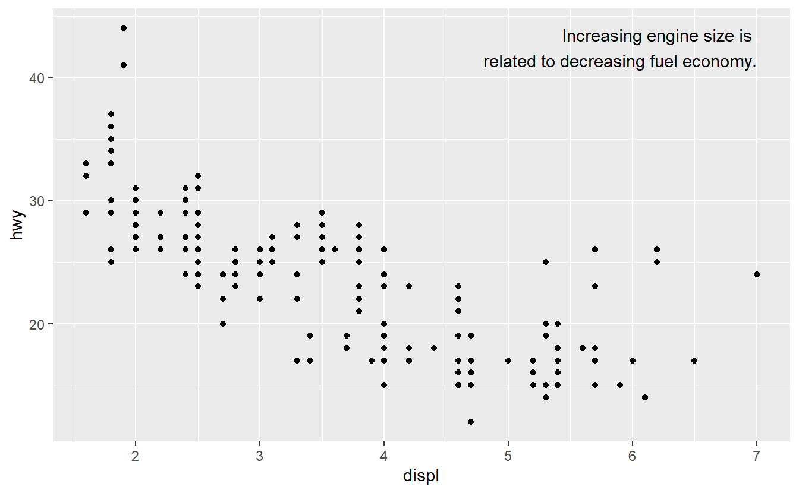
If you want to place the text exactly on the borders of the plot, you can use +Inf and -Inf. Since we’re no longer computing the positions from mpg, we can use tibble() to create the data frame:
label <- tibble(
displ = Inf,
hwy = Inf,
label = "Increasing engine size is \nrelated to decreasing fuel economy."
)
ggplot(mpg, aes(displ, hwy)) +
geom_point() +
geom_text(aes(label = label), data = label, vjust = "top", hjust = "right")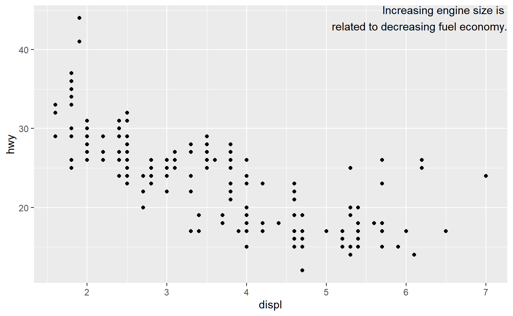
In these examples, I manually broke the label up into lines using "\n". Another approach is to use stringr::str_wrap() to automatically add line breaks, given the number of characters you want per line:
"Increasing engine size is related to decreasing fuel economy." %>%
stringr::str_wrap(width = 40) %>%
writeLines()
#> Increasing engine size is related to
#> decreasing fuel economy.Note the use of hjust and vjust to control the alignment of the label. Figure 11.1 shows all nine possible combinations.
Figure 11.1: All nine combinations of hjust and vjust.
Remember, in addition to geom_text(), you have many other geoms in ggplot2 available to help annotate your plot. A few ideas:
Use
geom_hline()andgeom_vline()to add reference lines. I often make them thick (size = 2) and white (colour = white), and draw them underneath the primary data layer. That makes them easy to see, without drawing attention away from the data.Use
geom_rect()to draw a rectangle around points of interest. The boundaries of the rectangle are defined by aestheticsxmin,xmax,ymin,ymax.Use
geom_segment()with thearrowargument to draw attention to a point with an arrow. Use aestheticsxandyto define the starting location, andxendandyendto define the end location.
The only limit is your imagination (and your patience with positioning annotations to be aesthetically pleasing)!
11.3.1 Exercises
Use
geom_text()with infinite positions to place text at the four corners of the plot.Read the documentation for
annotate(). How can you use it to add a text label to a plot without having to create a tibble?How do labels with
geom_text()interact with faceting? How can you add a label to a single facet? How can you put a different label in each facet? (Hint: think about the underlying data.)What arguments to
geom_label()control the appearance of the background box?What are the four arguments to
arrow()? How do they work? Create a series of plots that demonstrate the most important options.
11.4 Scales
The third way you can make your plot better for communication is to adjust the scales. Scales control the mapping from data values to things that you can perceive. Normally, ggplot2 automatically adds scales for you. For example, when you type:
ggplot2 automatically adds default scales behind the scenes:
ggplot(mpg, aes(displ, hwy)) +
geom_point(aes(colour = class)) +
scale_x_continuous() +
scale_y_continuous() +
scale_colour_discrete()Note the naming scheme for scales: scale_ followed by the name of the aesthetic, then _, then the name of the scale. The default scales are named according to the type of variable they align with: continuous, discrete, datetime, or date. There are lots of non-default scales which you’ll learn about below.
The default scales have been carefully chosen to do a good job for a wide range of inputs. Nevertheless, you might want to override the defaults for two reasons:
You might want to tweak some of the parameters of the default scale. This allows you to do things like change the breaks on the axes, or the key labels on the legend.
You might want to replace the scale altogether, and use a completely different algorithm. Often you can do better than the default because you know more about the data.
11.4.1 Axis ticks and legend keys
There are two primary arguments that affect the appearance of the ticks on the axes and the keys on the legend: breaks and labels. Breaks controls the position of the ticks, or the values associated with the keys. Labels controls the text label associated with each tick/key. The most common use of breaks is to override the default choice:
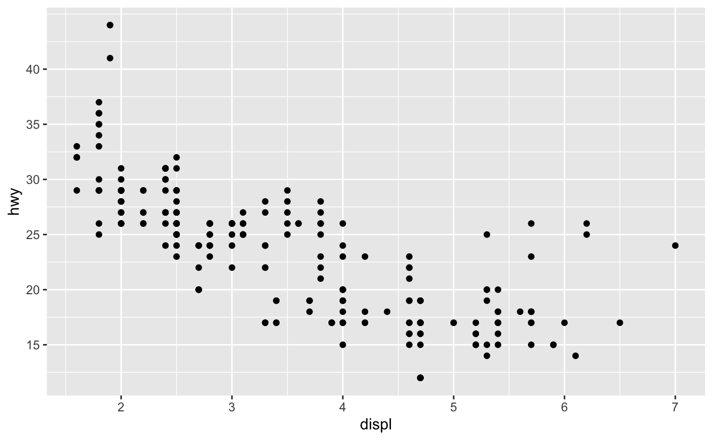
You can use labels in the same way (a character vector the same length as breaks), but you can also set it to NULL to suppress the labels altogether. This is useful for maps, or for publishing plots where you can’t share the absolute numbers.
ggplot(mpg, aes(displ, hwy)) +
geom_point() +
scale_x_continuous(labels = NULL) +
scale_y_continuous(labels = NULL)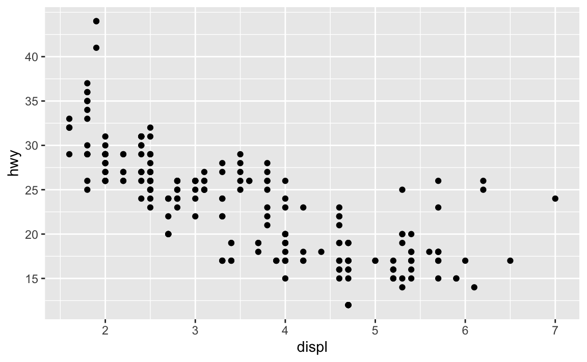
You can also use breaks and labels to control the appearance of legends. Collectively axes and legends are called guides. Axes are used for x and y aesthetics; legends are used for everything else.
Another use of breaks is when you have relatively few data points and want to highlight exactly where the observations occur. For example, take this plot that shows when each US president started and ended their term.
presidential %>%
mutate(id = 33 + row_number()) %>%
ggplot(aes(start, id)) +
geom_point() +
geom_segment(aes(xend = end, yend = id)) +
scale_x_date(NULL, breaks = presidential$start, date_labels = "'%y")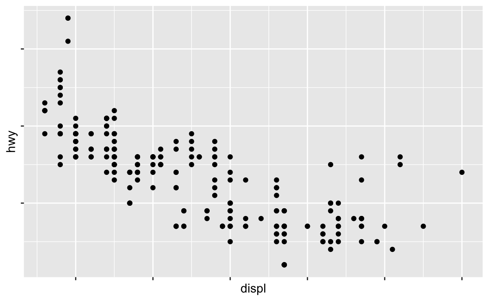
Note that the specification of breaks and labels for date and datetime scales is a little different:
date_labelstakes a format specification, in the same form asparse_datetime().date_breaks(not shown here), takes a string like “2 days” or “1 month”.
11.4.2 Legend layout
You will most often use breaks and labels to tweak the axes. While they both also work for legends, there are a few other techniques you are more likely to use.
To control the overall position of the legend, you need to use a theme() setting. We’ll come back to themes at the end of the chapter, but in brief, they control the non-data parts of the plot. The theme setting legend.position controls where the legend is drawn:
base <- ggplot(mpg, aes(displ, hwy)) +
geom_point(aes(colour = class))
base + theme(legend.position = "left")
base + theme(legend.position = "top")
base + theme(legend.position = "bottom")
base + theme(legend.position = "right") # the default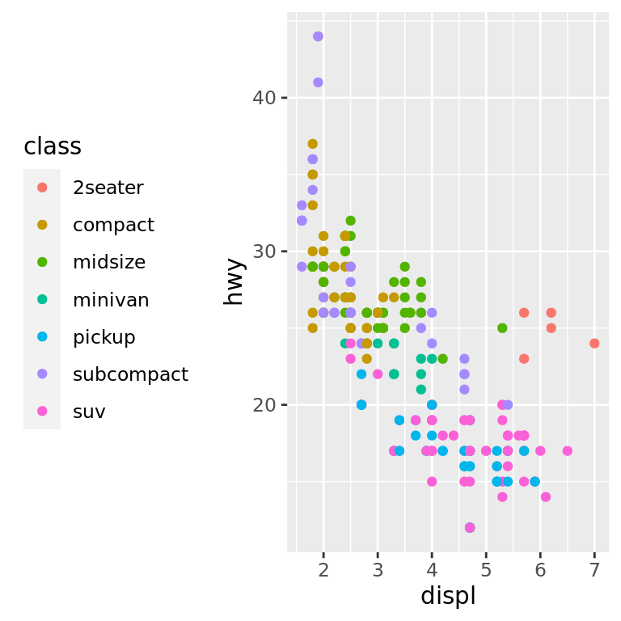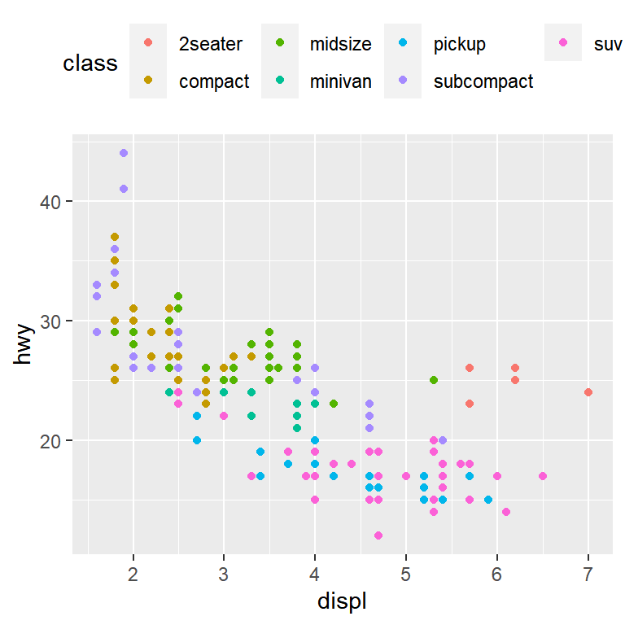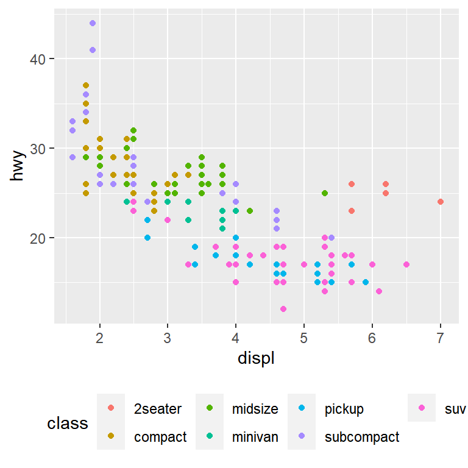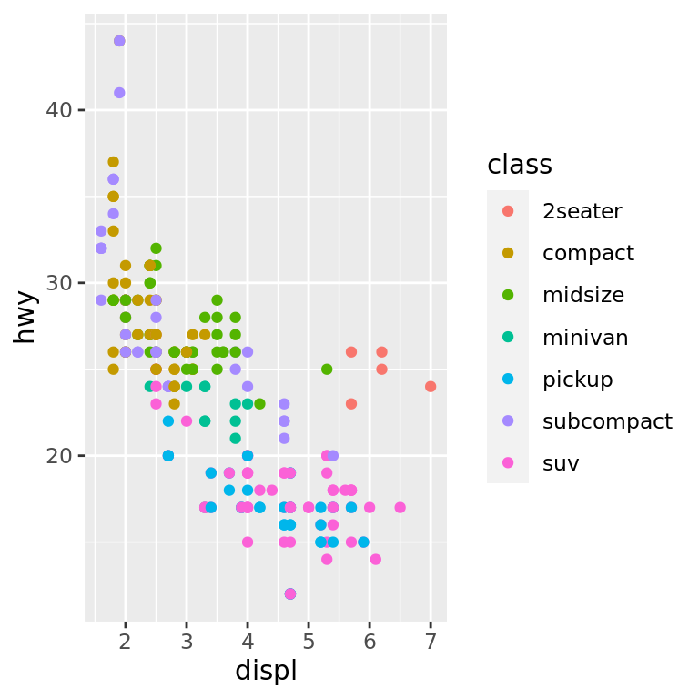
You can also use legend.position = "none" to suppress the display of the legend altogether.
To control the display of individual legends, use guides() along with guide_legend() or guide_colourbar(). The following example shows two important settings: controlling the number of rows the legend uses with nrow, and overriding one of the aesthetics to make the points bigger. This is particularly useful if you have used a low alpha to display many points on a plot.
ggplot(mpg, aes(displ, hwy)) +
geom_point(aes(colour = class)) +
geom_smooth(se = FALSE) +
theme(legend.position = "bottom") +
guides(colour = guide_legend(nrow = 1, override.aes = list(size = 4)))
#> `geom_smooth()` using method = 'loess' and formula 'y ~ x'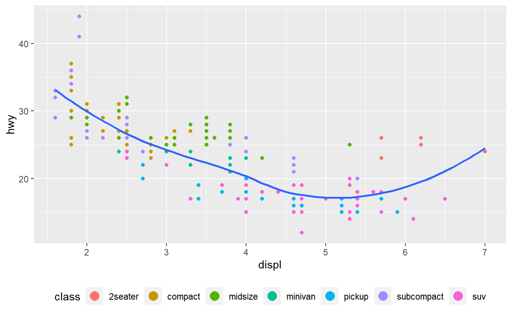
11.4.3 Replacing a scale
Instead of just tweaking the details a little, you can instead replace the scale altogether. There are two types of scales you’re mostly likely to want to switch out: continuous position scales and colour scales. Fortunately, the same principles apply to all the other aesthetics, so once you’ve mastered position and colour, you’ll be able to quickly pick up other scale replacements.
It’s very useful to plot transformations of your variable. For example, as we’ve seen in diamond prices it’s easier to see the precise relationship between carat and price if we log transform them:
ggplot(diamonds, aes(carat, price)) +
geom_bin2d()
ggplot(diamonds, aes(log10(carat), log10(price))) +
geom_bin2d()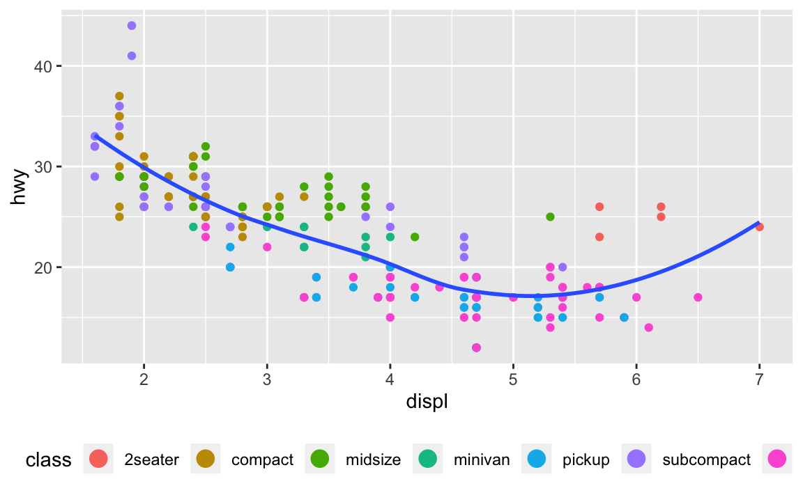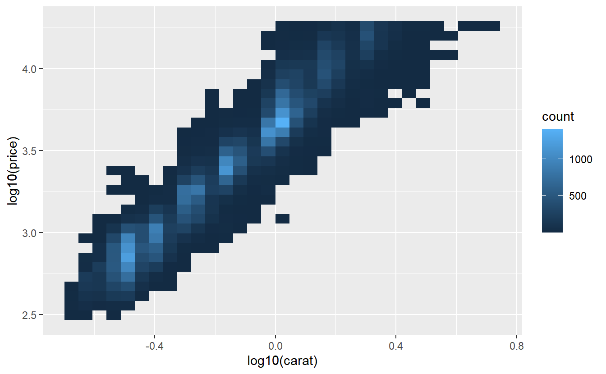
However, the disadvantage of this transformation is that the axes are now labelled with the transformed values, making it hard to interpret the plot. Instead of doing the transformation in the aesthetic mapping, we can instead do it with the scale. This is visually identical, except the axes are labelled on the original data scale.
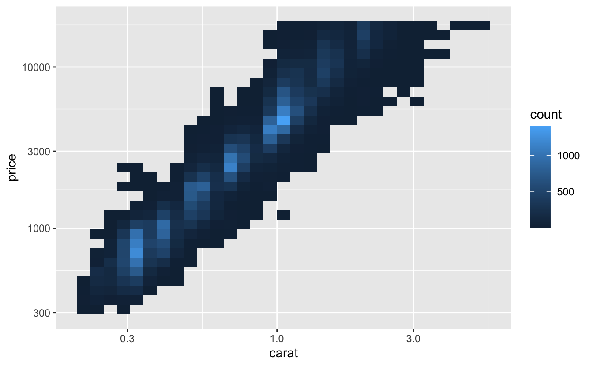
Another scale that is frequently customised is colour. The default categorical scale picks colours that are evenly spaced around the colour wheel. Useful alternatives are the ColorBrewer scales which have been hand tuned to work better for people with common types of colour blindness. The two plots below look similar, but there is enough difference in the shades of red and green that the dots on the right can be distinguished even by people with red-green colour blindness.
ggplot(mpg, aes(displ, hwy)) +
geom_point(aes(color = drv))
ggplot(mpg, aes(displ, hwy)) +
geom_point(aes(color = drv)) +
scale_colour_brewer(palette = "Set1")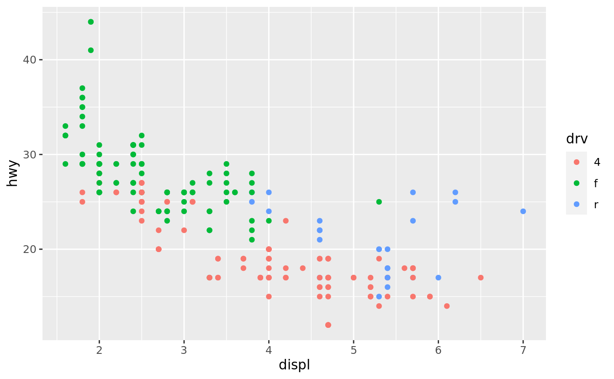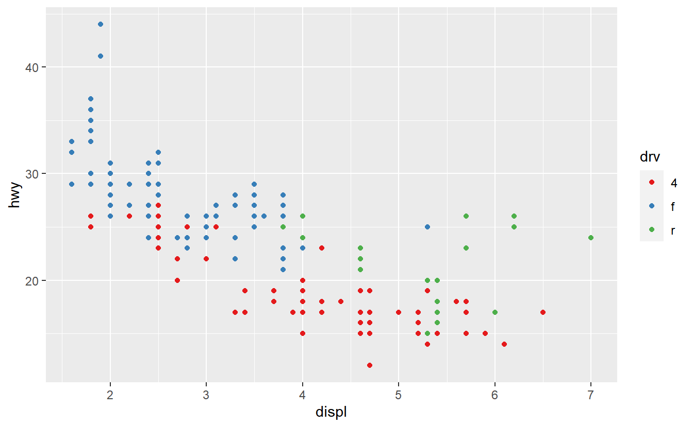
Don’t forget simpler techniques. If there are just a few colours, you can add a redundant shape mapping. This will also help ensure your plot is interpretable in black and white.
ggplot(mpg, aes(displ, hwy)) +
geom_point(aes(color = drv, shape = drv)) +
scale_colour_brewer(palette = "Set1")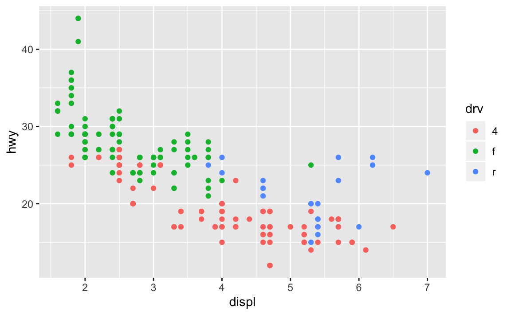
The ColorBrewer scales are documented online at http://colorbrewer2.org/ and made available in R via the RColorBrewer package, by Erich Neuwirth. Figure 11.2 shows the complete list of all palettes. The sequential (top) and diverging (bottom) palettes are particularly useful if your categorical values are ordered, or have a “middle”. This often arises if you’ve used cut() to make a continuous variable into a categorical variable.
Figure 11.2: All ColourBrewer scales.
When you have a predefined mapping between values and colours, use scale_colour_manual(). For example, if we map presidential party to colour, we want to use the standard mapping of red for Republicans and blue for Democrats:
presidential %>%
mutate(id = 33 + row_number()) %>%
ggplot(aes(start, id, colour = party)) +
geom_point() +
geom_segment(aes(xend = end, yend = id)) +
scale_colour_manual(values = c(Republican = "red", Democratic = "blue"))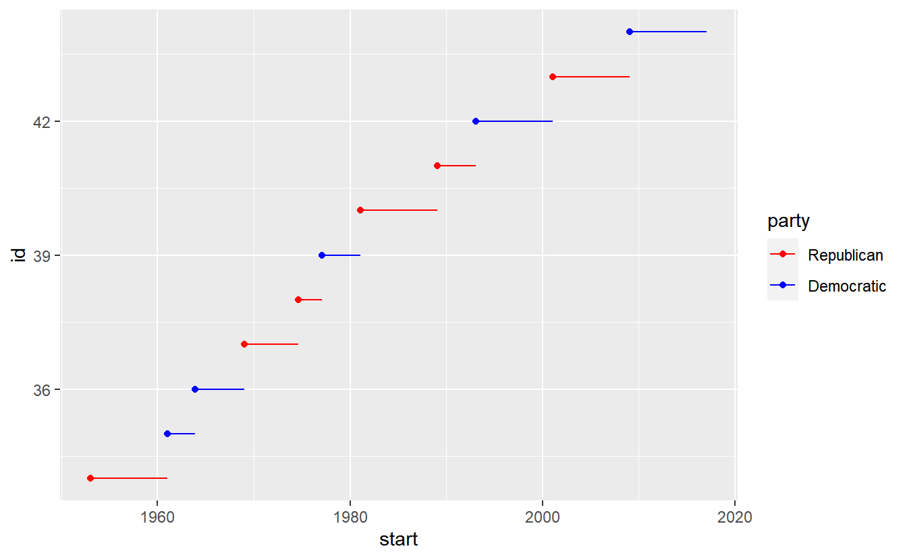
For continuous colour, you can use the built-in scale_colour_gradient() or scale_fill_gradient(). If you have a diverging scale, you can use scale_colour_gradient2(). That allows you to give, for example, positive and negative values different colours. That’s sometimes also useful if you want to distinguish points above or below the mean.
Another option is scale_colour_viridis() provided by the viridis package. It’s a continuous analog of the categorical ColorBrewer scales. The designers, Nathaniel Smith and Stéfan van der Walt, carefully tailored a continuous colour scheme that has good perceptual properties. Here’s an example from the viridis vignette.
df <- tibble(
x = rnorm(10000),
y = rnorm(10000)
)
ggplot(df, aes(x, y)) +
geom_hex() +
coord_fixed()
#> Warning: Computation failed in `stat_binhex()`:
#> Package `hexbin` required for `stat_binhex`.
#> Please install and try again.
ggplot(df, aes(x, y)) +
geom_hex() +
viridis::scale_fill_viridis() +
coord_fixed()
#> Warning: Computation failed in `stat_binhex()`:
#> Package `hexbin` required for `stat_binhex`.
#> Please install and try again.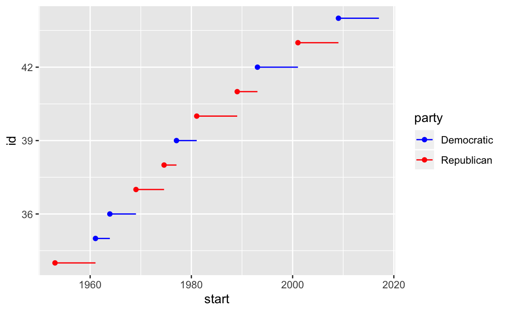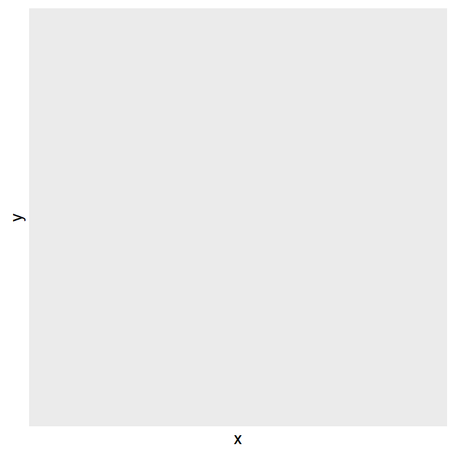
Note that all colour scales come in two variety: scale_colour_x() and scale_fill_x() for the colour and fill aesthetics respectively (the colour scales are available in both UK and US spellings).
11.4.4 Exercises
Why doesn’t the following code override the default scale?
What is the first argument to every scale? How does it compare to
labs()?Change the display of the presidential terms by:
- Combining the two variants shown above.
- Improving the display of the y axis.
- Labelling each term with the name of the president.
- Adding informative plot labels.
- Placing breaks every 4 years (this is trickier than it seems!).
Use
override.aesto make the legend on the following plot easier to see.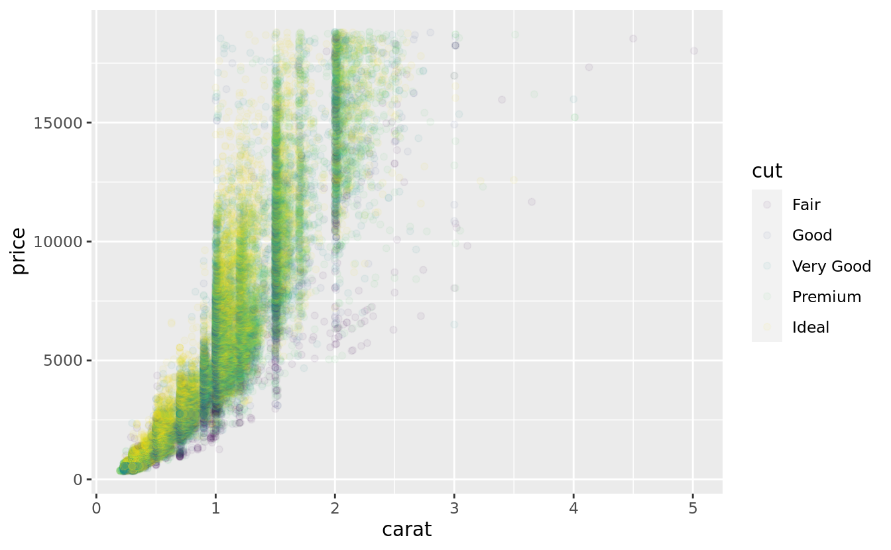
11.5 Zooming
There are three ways to control the plot limits:
- Adjusting what data are plotted
- Setting the limits in each scale
- Setting
xlimandylimincoord_cartesian()
To zoom in on a region of the plot, it’s generally best to use coord_cartesian(). Compare the following two plots:
ggplot(mpg, mapping = aes(displ, hwy)) +
geom_point(aes(color = class)) +
geom_smooth() +
coord_cartesian(xlim = c(5, 7), ylim = c(10, 30))
mpg %>%
filter(displ >= 5, displ <= 7, hwy >= 10, hwy <= 30) %>%
ggplot(aes(displ, hwy)) +
geom_point(aes(color = class)) +
geom_smooth()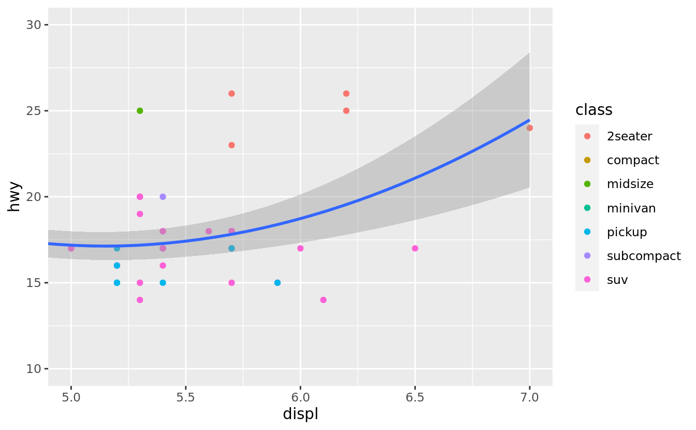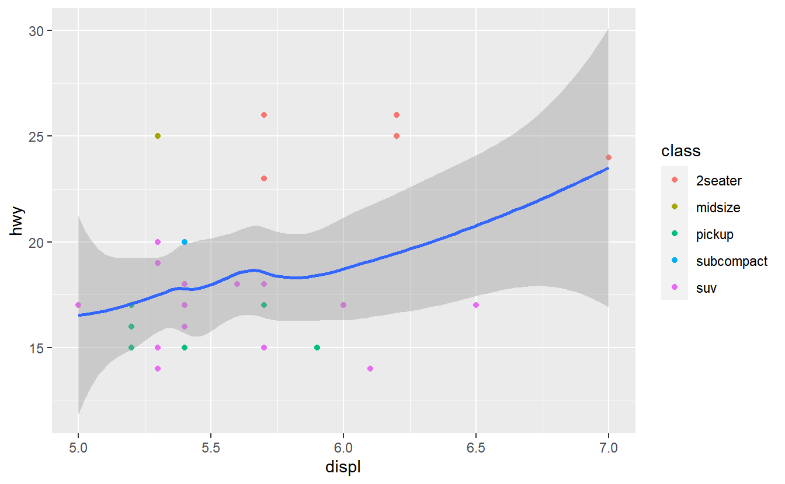
You can also set the limits on individual scales. Reducing the limits is basically equivalent to subsetting the data. It is generally more useful if you want expand the limits, for example, to match scales across different plots. For example, if we extract two classes of cars and plot them separately, it’s difficult to compare the plots because all three scales (the x-axis, the y-axis, and the colour aesthetic) have different ranges.
suv <- mpg %>% filter(class == "suv")
compact <- mpg %>% filter(class == "compact")
ggplot(suv, aes(displ, hwy, colour = drv)) +
geom_point()
ggplot(compact, aes(displ, hwy, colour = drv)) +
geom_point()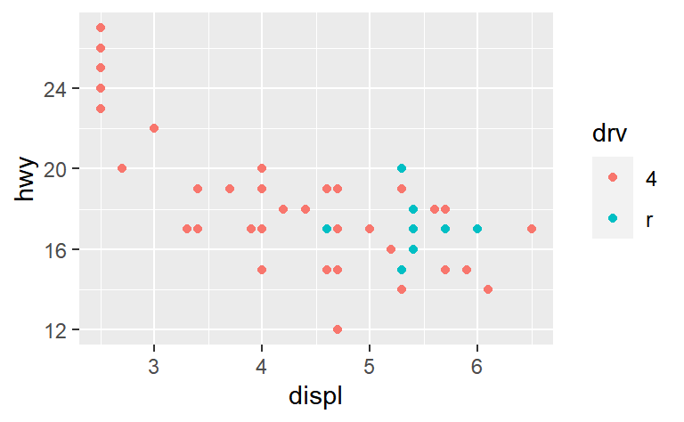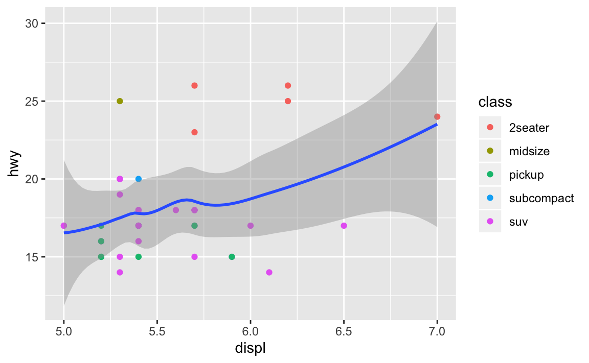
One way to overcome this problem is to share scales across multiple plots, training the scales with the limits of the full data.
x_scale <- scale_x_continuous(limits = range(mpg$displ))
y_scale <- scale_y_continuous(limits = range(mpg$hwy))
col_scale <- scale_colour_discrete(limits = unique(mpg$drv))
ggplot(suv, aes(displ, hwy, colour = drv)) +
geom_point() +
x_scale +
y_scale +
col_scale
ggplot(compact, aes(displ, hwy, colour = drv)) +
geom_point() +
x_scale +
y_scale +
col_scale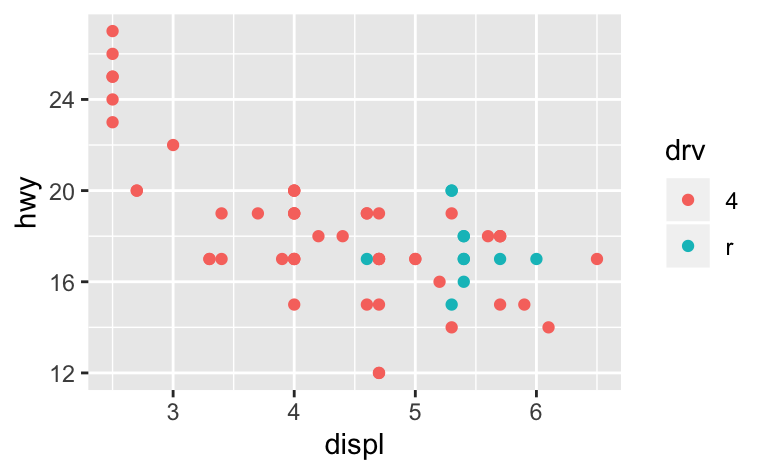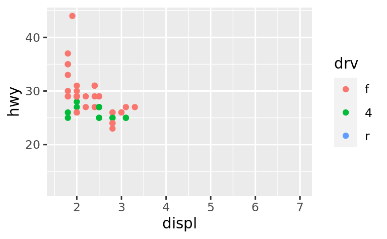
In this particular case, you could have simply used faceting, but this technique is useful more generally, if for instance, you want spread plots over multiple pages of a report.
11.6 Themes
Finally, you can customise the non-data elements of your plot with a theme:
ggplot(mpg, aes(displ, hwy)) +
geom_point(aes(color = class)) +
geom_smooth(se = FALSE) +
theme_bw()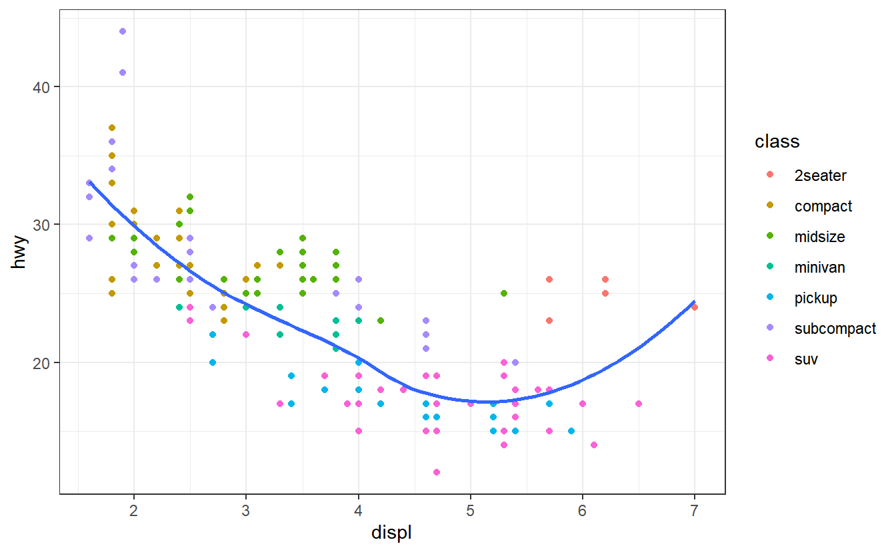
ggplot2 includes eight themes by default, as shown in Figure 11.3. Many more are included in add-on packages like ggthemes (https://github.com/jrnold/ggthemes), by Jeffrey Arnold.

Figure 11.3: The eight themes built-in to ggplot2.
Many people wonder why the default theme has a grey background. This was a deliberate choice because it puts the data forward while still making the grid lines visible. The white grid lines are visible (which is important because they significantly aid position judgements), but they have little visual impact and we can easily tune them out. The grey background gives the plot a similar typographic colour to the text, ensuring that the graphics fit in with the flow of a document without jumping out with a bright white background. Finally, the grey background creates a continuous field of colour which ensures that the plot is perceived as a single visual entity.
It’s also possible to control individual components of each theme, like the size and colour of the font used for the y axis. Unfortunately, this level of detail is outside the scope of this book, so you’ll need to read the ggplot2 book for the full details. You can also create your own themes, if you are trying to match a particular corporate or journal style.
11.7 Saving your plots
There are two main ways to get your plots out of R and into your final write-up: ggsave() and knitr. ggsave() will save the most recent plot to disk:

If you don’t specify the width and height they will be taken from the dimensions of the current plotting device. For reproducible code, you’ll want to specify them.
Generally, however, I think you should be assembling your final reports using R Markdown, so I want to focus on the important code chunk options that you should know about for graphics. You can learn more about ggsave() in the documentation.
11.7.1 Figure sizing
The biggest challenge of graphics in R Markdown is getting your figures the right size and shape. There are five main options that control figure sizing: fig.width, fig.height, fig.asp, out.width and out.height. Image sizing is challenging because there are two sizes (the size of the figure created by R and the size at which it is inserted in the output document), and multiple ways of specifying the size (i.e., height, width, and aspect ratio: pick two of three).
I only ever use three of the five options:
I find it most aesthetically pleasing for plots to have a consistent width. To enforce this, I set
fig.width = 6(6") andfig.asp = 0.618(the golden ratio) in the defaults. Then in individual chunks, I only adjustfig.asp.I control the output size with
out.widthand set it to a percentage of the line width. I default toout.width = "70%"andfig.align = "center". That give plots room to breathe, without taking up too much space.To put multiple plots in a single row I set the
out.widthto50%for two plots,33%for 3 plots, or25%to 4 plots, and setfig.align = "default". Depending on what I’m trying to illustrate ( e.g. show data or show plot variations), I’ll also tweakfig.width, as discussed below.
If you find that you’re having to squint to read the text in your plot, you need to tweak fig.width. If fig.width is larger than the size the figure is rendered in the final doc, the text will be too small; if fig.width is smaller, the text will be too big. You’ll often need to do a little experimentation to figure out the right ratio between the fig.width and the eventual width in your document. To illustrate the principle, the following three plots have fig.width of 4, 6, and 8 respectively:
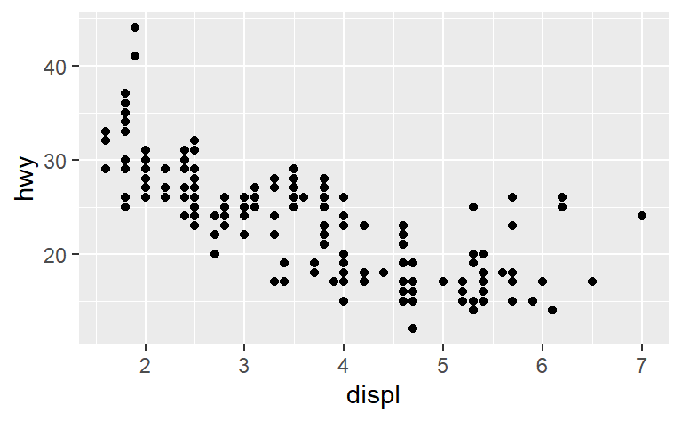 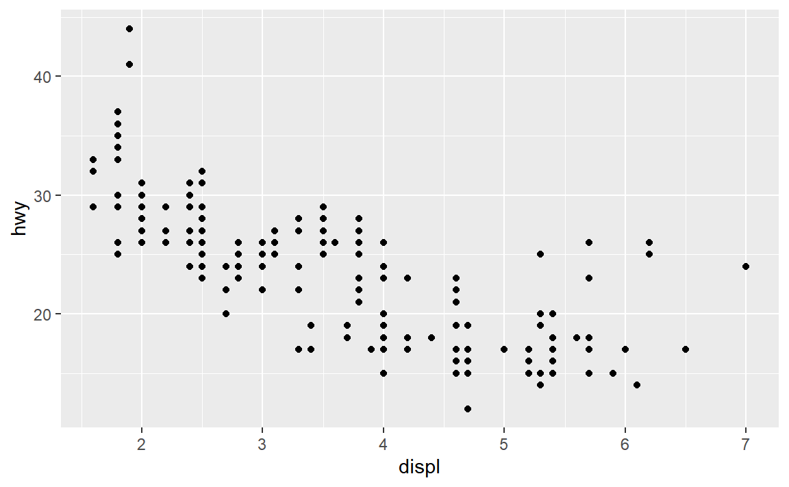 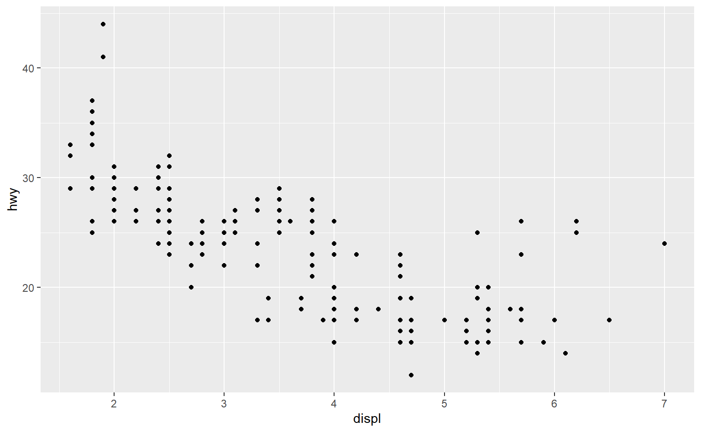
If you want to make sure the font size is consistent across all your figures, whenever you set out.width, you’ll also need to adjust fig.width to maintain the same ratio with your default out.width. For example, if your default fig.width is 6 and out.width is 0.7, when you set out.width = "50%" you’ll need to set fig.width to 4.3 (6 * 0.5 / 0.7).
11.7.2 Other important options
When mingling code and text, like I do in this book, I recommend setting fig.show = "hold" so that plots are shown after the code. This has the pleasant side effect of forcing you to break up large blocks of code with their explanations.
To add a caption to the plot, use fig.cap. In R Markdown this will change the figure from inline to “floating”.
If you’re producing PDF output, the default graphics type is PDF. This is a good default because PDFs are high quality vector graphics. However, they can produce very large and slow plots if you are displaying thousands of points. In that case, set dev = "png" to force the use of PNGs. They are slightly lower quality, but will be much more compact.
It’s a good idea to name code chunks that produce figures, even if you don’t routinely label other chunks. The chunk label is used to generate the file name of the graphic on disk, so naming your chunks makes it much easier to pick out plots and reuse in other circumstances (i.e. if you want to quickly drop a single plot into an email or a tweet).
11.8 Learning more
The absolute best place to learn more is the ggplot2 book: ggplot2: Elegant graphics for data analysis. It goes into much more depth about the underlying theory, and has many more examples of how to combine the individual pieces to solve practical problems. Unfortunately, the book is not available online for free, although you can find the source code at https://github.com/hadley/ggplot2-book.
Another great resource is the ggplot2 extensions guide http://www.ggplot2-exts.org/. This site lists many of the packages that extend ggplot2 with new geoms and scales. It’s a great place to start if you’re trying to do something that seems hard with ggplot2.